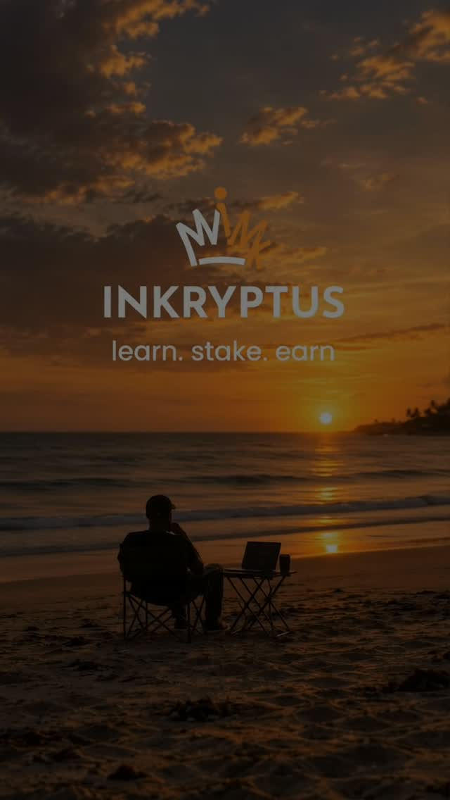

INKRYPTUS FILM / 01 Twin-me concept · short creative ad01 Brand film · Inkryptus
One idea.
Two of me.
For this short Inkryptus ad, I played both sides of the idea. It was fun building a simple twin-me concept into a quick story.